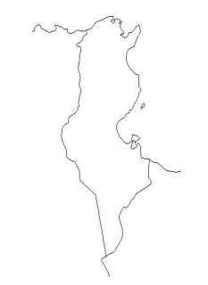
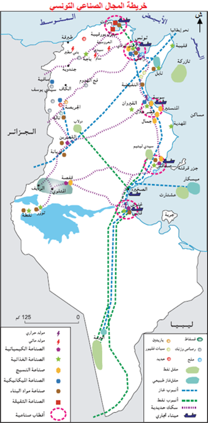

فرض مراقبة عدد 3 في الجغرافيا
المستوى: التاسعة أساسي | المادة: جغرافيا
المدة: ساعة واحدة
📋 تعليمات عامة
- أجب عن الأسئلة بدقة ووضوح معتمداً على مكتسباتك.
- جودة التحرير وسلامة اللغة تؤخذان بعين الاعتبار.
- القسم الأول: 6 نقاط | القسم الثاني: 12 نقطة | نقطتان إضافيتان للصياغة والتنظيم.
القسم الأول – المعارف والمصطلحات 6 نقاط
1) لون في الخريطة البلدان التي تنتج الصناعات التالية وكما يلي: 3 نقاط
صناعة النسيج (أصفر) | الصناعات الغذائية (أحمر) | صناعة السكر (أزرق) | الصناعات الكيميائية (أخضر)

المطلوب: تلوين المناطق حسب المطلوب مباشرة على الخريطة (أو وصف التوزيع كتابياً في الفراغ أدناه).
2) أكمل الجدول بما يناسب: 3 نقاط
| إيجابيات النشاط السياحي التونسي | سلبيات النشاط السياحي التونسي |
|---|---|
القسم الثاني – التحرير 12 نقطة
الموضوع: عرفت الصناعة التونسية نمواً ملحوظاً.
حرّر فقرة متماسكة تبيّن فيها:
- مجهود الدولة في مجال الصناعة.
- خصائص الإنتاج الصناعي التونسي.
تنقيط إضافي: صياغة وحسن تنظيم (+ نقطتان)
📘 التصحيح المفصّل – تحليل جغرافي معمّق
القسم الأول – تصحيح الأسئلة (6 نقاط)
1/ تلوين الخريطة – الإجابة الصحيحة: 3 نقاط

• صناعة النسيج (أصفر): تنتشر خصوصاً في تونس الكبرى، المنستير، سوسة، وصفاقس (المناطق الساحلية).
• الصناعات الغذائية (أحمر): تتركز في الوطن القبلي (زيت الزيتون، المصبرات)، تونس الكبرى، وصفاقس.
• صناعة السكر (أزرق): تتمثل أساساً في مصانع تكرير السكر (باجة، تونس العاصمة).
• الصناعات الكيميائية (أخضر): قطبها الرئيسي بقابس (المجمع الكيميائي التونسي لتحويل الفوسفات)، مع وجود بصيغة أقل في صفاقس وتونس.
2/ إكمال الجدول – إيجابيات وسلبيات النشاط السياحي: 3 نقاط
| إيجابيات النشاط السياحي التونسي | سلبيات النشاط السياحي التونسي |
|---|---|
| 1- توفير العملة الصعبة وتغطية جزء من العجز التجاري (يُساهم بأكثر من 14% من عائدات العملة الصعبة سنوياً، المصدر: البنك المركزي التونسي، 2022). | 1- نشاط موسمي يتركّز في الصيف (يوليو-أغسطس)، مما يُسبب بطالة موسمية لبقية السنة (نسبة البطالة الموسمية تُقدر بـ 5% إضافية في مناطق السياحة الشاطئية، المصدر: وزارة السياحة، 2021). |
| 2- خلق مواطن شغل مباشرة (حوالي 400 ألف موطن شغل مباشر وغير مباشر، المصدر: الديوان الوطني التونسي للسياحة، 2023). | 2- تباين جهوي حاد: 85% من الطاقة الإيوائية تتركز في الشريط الساحلي الشرقي (نابل – جربة)، مما يُهمّش الشمال الغربي والوسط الغربي، المصدر: المندوبية العامة للتنمية الجهوية، 2022. |
| 3- تنشيط البنية التحتية والمطارات (قرطاج، المنستير، جربة) ودعم الصناعات التقليدية. | 3- تأثير بيئي سلبي: استنزاف المياه خاصة في جربة بمعدل 150 لتر/سائح/يوم، وتلوث الشواطئ، المصدر: الوكالة الوطنية لحماية المحيط، 2020. |
القسم الثاني – التحرير النموذجي (12 نقطة + نقطتان)
- مقدمة: أهمية القطاع الصناعي في التنمية الاقتصادية التونسية.
- المحور الأول: مجهود الدولة في مجال الصناعة
- الاستثمار العمومي في الصناعات الثقيلة والكيميائية بعد الاستقلال.
- سن القوانين المحفزة للاستثمار الخاص والأجنبي (قانون 1972، قانون 1995).
- إحداث المناطق الصناعية والمناطق الحرة.
- دعم التكوين المهني والتكنولوجي.
- المحور الثاني: خصائص الإنتاج الصناعي التونسي
- تنوع القطاعات (نسيج، ميكانيك، صناعات غذائية، كيميائية).
- التمركز الجغرافي الساحلي.
- التوجه نحو التصدير والاندماج في الاقتصاد العالمي.
- ضعف التكامل بين القطاعات وارتفاع نسبة التجميع.
- خاتمة: حصيلة وتحديات القطاع الصناعي.
📌 مقدمة:
يُعتبر القطاع الصناعي أحد الركائز الأساسية للاقتصاد التونسي، حيث يساهم بأكثر من 24% من الناتج المحلي الإجمالي (المصدر: المعهد الوطني للإحصاء، 2023) ويُشغّل حوالي 34% من اليد العاملة النشيطة (المصدر: INS، 2023). ومنذ الاستقلال، أولت الدولة التونسية عناية خاصة بدفع عجلة التصنيع عبر سياسات عمومية وإصلاحات هيكلية متتالية، مما جعل الإنتاج الصناعي يكتسب خصائص مميزة تعكس اندماج البلاد في الاقتصاد العالمي.
📌 المحور الأول: مجهود الدولة في مجال الصناعة:
1. مرحلة التصنيع العمومي (1960-1972): تبنت الدولة سياسة إحلال الواردات عبر إحداث مؤسسات عمومية كبرى في قطاعات استراتيجية. تم إنشاء المجمع الكيميائي التونسي بقابس لتحويل الفوسفات، وشركة الفولاذ بمنزل بورقيبة، والشركة التونسية للكهرباء والغاز. كما تم إرساء أقطاب صناعية بكل من صفاقس وسوسة وتونس العاصمة من أجل تحقيق التوازن الجهوي. وقد بلغت الاستثمارات العمومية الصناعية في تلك الفترة حوالي 30% من إجمالي الاستثمار العمومي (المصدر: وزارة الاقتصاد، 1970).
2. الانفتاح وتشجيع الاستثمار (1972-1995): مثّل قانون 27 أفريل 1972 المتعلق بالصناعات الموجهة كلياً للتصدير ("نظام الأوف شور") منعرجاً حاسماً. فقد منح المستثمرين الأجانب إعفاءات جبائية وحرية تحويل الأرباح، مما أدى إلى تدفق رؤوس الأموال الأجنبية خاصة في قطاعي النسيج والملابس والمكونات الميكانيكية. وقد تضاعف عدد المؤسسات الصناعية المصدرة من حوالي 200 مؤسسة سنة 1975 إلى أكثر من 1200 مؤسسة سنة 1990 (المصدر: وكالة النهوض بالصناعة، 1990). ولاحقاً، جاء قانون تشجيع الاستثمارات عدد 95-100 لسنة 1995 ليعزز الحوافز ويُحدث مناطق تنمية جهوية.
3. الخوصصة والمناطق الحرة (1995-2011): مع برنامج الإصلاح الهيكلي، تمت خوصصة العديد من المؤسسات العمومية (الإسمنت، بعض الصناعات الغذائية). كما أنشأت الدولة المناطق الحرة ببنزرت وجرجيس وزغوان لجذب المزيد من الاستثمارات الخارجية وتوفير مواطن شغل. وقد ارتفعت صادرات الصناعات الميكانيكية والكهربائية لتحتل المرتبة الأولى (28% من الصادرات سنة 2010) (المصدر: INS، 2010).
4. التوجه نحو الصناعات التكنولوجية (2011-2024): تركز الجهود حالياً على دعم الصناعات الذكية والطاقات المتجددة، من خلال إحداث أقطاب تكنولوجية (قطب الفحص) وتشجيع المؤسسات الناشئة. وقد تم إحداث أكثر من 50 منطقة صناعية جديدة بين 2017 و2023، خاصة في القيروان وقفصة وسيدي بوزيد (المصدر: وزارة الصناعة والمناجم والطاقة، 2024).
📌 المحور الثاني: خصائص الإنتاج الصناعي التونسي:
1. تنوع القطاعات وهيمنة الصناعات التحويلية: يتميز النسيج الصناعي بتنوعه، حيث تشمل أبرز القطاعات: الصناعات الميكانيكية والكهربائية (التي أصبحت تحتل المرتبة الأولى في الصادرات بنسبة 28%، المصدر: INS، 2023)، وصناعات النسيج والملابس (المرتبة الثانية بحوالي 22% من الصادرات)، والصناعات الغذائية، والصناعات الكيميائية.
2. التوجه القوي نحو التصدير: تُعتبر تونس من أكثر الاقتصادات العربية انفتاحاً، حيث تمثل الصادرات الصناعية حوالي 85% من مجموع الصادرات (المصدر: INS، 2023). ويُعتبر الاتحاد الأوروبي الشريك التجاري الأول (أكثر من 70% من المبادلات، المصدر: وزارة التجارة، 2023)، مما يجعل الصناعة التونسية شديدة الارتباط بالفضاء الأوروبي.
3. ضعف التكامل والاعتماد على التجميع: تعتمد عديد الصناعات التونسية، خاصة في قطاعي النسيج والميكانيك، على نظام المقاولة من الباطن والتجميع (صناعة "الأوف شور"). فهي تقوم بتحويل مواد أولية وأجزاء مستوردة ثم إعادة تصديرها، مما يُقلص من القيمة المضافة المحلية. وتُقدر نسبة القيمة المضافة المحلية في قطاع النسيج الأوف شور بأقل من 25% فقط (المصدر: الوكالة الألمانية للتعاون الدولي، 2021).
4. التمركز الجغرافي الساحلي: تُلاحظ خاصية التمركز الحاد للصناعات في الشريط الساحلي الشرقي (من بنزرت إلى جرجيس)، والذي يستأثر بأكثر من 80% من المؤسسات و90% من اليد العاملة الصناعية (المصدر: المندوبية العامة للتنمية الجهوية، 2022). وقد نتج عن ذلك خلل جهوي كبير يُعمق الفجوة بين الساحل والداخل.
📌 خاتمة:
رغم المجهودات الكبيرة التي بذلتها الدولة التونسية لدفع التصنيع، وما حققه القطاع من نتائج هامة على مستوى التصدير والتشغيل، إلا أنه يواجه تحديات بنيوية. أبرزها التبعية التكنولوجية والطاقية للخارج، وضعف التأطير في الصناعات ذات المحتوى التكنولوجي العالي. لذلك، يظل الرهان اليوم هو تطوير البحث العلمي والتجديد، وتعميق التصنيع نحو الداخل التونسي لضمان تنمية جهوية متوازنة ومستدامة.
- حسب المعهد الوطني للإحصاء (INS، 2023): بلغت قيمة الصادرات الصناعية 38 مليار دينار، وهو ما يمثل 85% من إجمالي الصادرات.
- وكالة النهوض بالصناعة والتجديد (API، 2024): تم إحداث أكثر من 50 منطقة صناعية جديدة بين 2017 و2023، خاصة في القيروان وقفصة وسيدي بوزيد، في إطار سياسة التمييز الإيجابي.
- تقرير البنك الدولي 2023: يُشير إلى أن مساهمة الصناعات التحويلية وحدها تُقدر بـ 16% من الناتج المحلي الإجمالي، مما يدل على حاجة الاقتصاد إلى تنويع أكبر.
معايير تنقيط التحرير (12 نقطة + نقطتان للصياغة)
• المحتوى المعرفي (7ن): ذكر مجهودات الدولة (قوانين، مؤسسات) وخصائص الإنتاج الصناعي (تصدير، تنوع، تمركز، تبعية) مع إحصائيات دالة.
• سلامة اللغة ودقة المصطلحات (نقطتان إضافيتان): خلو النص من الأخطاء الإملائية والنحوية، واستخدام مفردات جغرافية واقتصادية دقيقة.